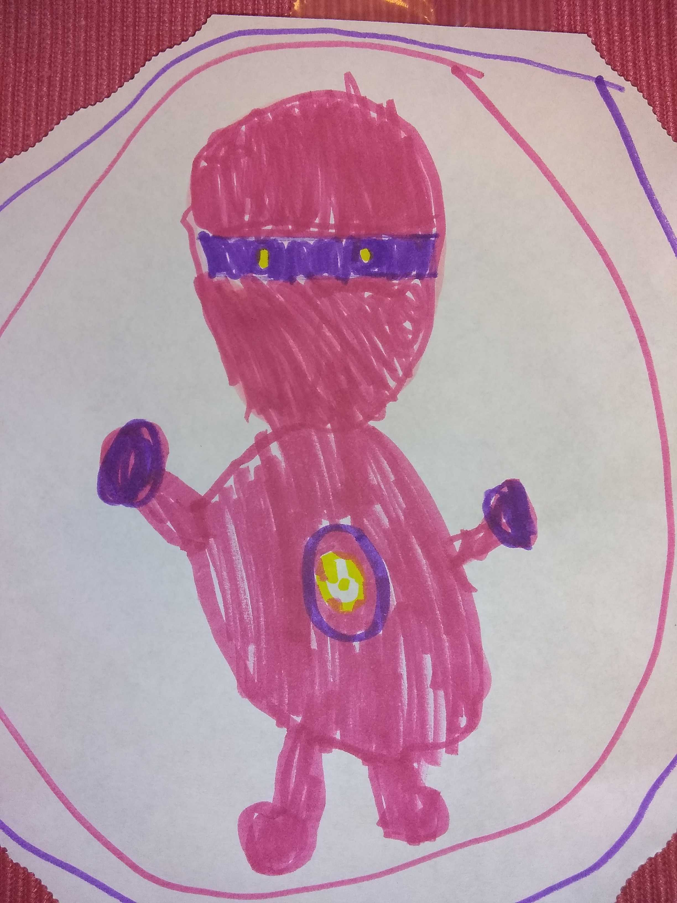

P2
Powerhound_2000
2021-12-07 15:08 UTC
#1
Everywhere and nowhere at the same time
Fan art posted to it as well 
Everywhere and nowhere at the same time
Fan art posted to it as well 
Funny that Adam brought up Sonic, because I immediately thought of Sonic Adventure and the little Chao things that you can raise. And those are, in plural, pronounced “chows”.
The singular entity of moderation should be the lord of the Gray.
The Wager Master Paradox, if you will, makes sense and is completely explained by the sandwich bag. There’s not just one multiverse at the moment, there’s two, even if one of them consists of a single universe, and so each can have its own Singular Entities, capital letters even, even if those entities exist in plurality across both. And then if the sandwich bag is ever punctured, everything hits the fan and all bets are off.
Okay, but what if the sandwich bag is actually inside an entire bread bag, and the splintered-off choice-spawned realities are floating off to become a small multiverse in there, separate from the rest of Universe 1 as well as the original multiverse, but accessible to each other?
I think the question of Faultless’s responsibility in destroying the home of the Procitors is answered as Faultless is responsible, but not the entity it used to be, whose name is forgotten. It’s just complicated because we only know that entity as Faultless.
Sure, just about the most important topic they’ve ever tackled in one of these creator-mode episodes, and let’s spend the first half hour talking about a business merger. 
I don’t think “The Fervor” particularly needed a proper name, and I have no idea how they spell it, so I won’t be using it anytime soon.
If C&A ever want to know exactly what the rules of conquest are, so they can do a better job of writing Malavox, they should contract me to do part of the work. I have substantial understanding of how the psychology of domination and subjugation work, even though I don’t actually have much interest in doing it.
Personally, I think that Singular Entity Rainek Kel’Voss (henceforth SERK) does in fact still exist, no longer connected in any way to the Thorathian Grand Warlord Rainek Kel’Voss (henceforth GWV). As one of the very few cases in which a Mortal, Universe-contained Being (henceforth MUB) successfully transforms himself into a Singular Entity, Voss is essentially “the god of apotheosis”, and thus SERK represents the concept of Ambition on the state of singular-entityhood. Perhaps there has always been a SE of Ambition, but after GWV transformed himself momentarily into SERK, and then voluntarily returned to being GWV (or rather OblivaeVoss), the SE of Ambition thereafter appears as SERK, but is no longer connected to GWV or any other MUB. However, if another MUB aspired to achieve singular-entityhood, one route to doing so would be to {verb} with/to/at SERK in some fashion. Exactly what that {verb} should be is debatable; “appeal” is the best word I can come up for now, but it feels wrong.
It wasn’t that much of the episode and it is an item of importance for their company and the podcast.
Given that the death of a singular entity creates a new singular entity of that concept, it’s rather surprising that none of them were willing to sacrifice themselves in order to unmake the Exclusion Zone (aka “the sandwich bag”). After all, it’s hardly a sacrifice at all. It costs them about as much as throwing away your driver’s license would cost us. You’d think that the existence of a universe that they can’t enter, when their defining ability is the freedom to enter any universe that they want to, would bug them enough that they’d do whatever necessary to fix that situation.
Eh, there are nigh infinite other universes, what’s one they can’t enter?
I suppose their psychology COULD be vastly different from humans. But if being on the Internet has taught me anything, it’s that the 999,999,999 options you do have are less interesting than the one thing you’re currently being actively denied. So if the SEs are anything like humans, the “sandwich bag” should really…
sunglasses
…BURN THEIR TOAST.
They aren’t motivated the same ways as humans if this episode taught me anything.
I knew I was a Singular Entity. Only room for one Guise in this Multiverse.
Wellspring sounds quite a bit like Scion 2E Prometheus. Progress and invention, where cures for diseases and nuclear weapons are equally celebrated.
Akash’flora being Singular is… interesting. There are a few questions from that. Thinking about the Ruin/Preservation → Harmony thing from Mistborn.
No branching realities in the Sandwitch Bag… yet? I feel like Voss basically made a second multiverse. So whether the bag is too small or will expand as alternate timelines start to split hasn’t happened, yet.
I wrote a long, rambling letter, and I’m not surprised they didn’t read it. The big thing is a theory I have about Jansa and the Enclave. So if we started thinking about SE’s as the titan-types that are places in addition to a consciousness, would it be possible for the Jansa inside the bag to become Singular if she somehow merged with the Enclave? But it would likely be impossible for the Outside one, because there are so many versions, and they would have to get all squished together.
Of course, maybe that’s a Prime War thing…
I hate being critical, but this episode didn’t feel like much of a Creative Process.
We got a recap of the known Singular Entities, we got some names for a couple of new ones, and we worked through the huge backlog of questions about Singular Entities and the Sandwich bag.
I was more expecting “Let’s come up with a new Entity or two, and here’s their name and personality and what they look like, and what stories they might appear in”. The new entities we got just got a name and an acknowledgement that they exist but don’t do much.
I mean, this episode was a long time coming, as the question backlog shows, but maybe it should’ve been a normal episode instead of a creative process, since there was very little creating.
I actually kinda realized this myself once they got to the letters. This is more like how the first few Creative Processes (I think?) went, where they had all the work done before recording and just let us know what happened.
I can’t complain too much though, the letters section gave us all kinds of useful info.
Yeah, I suggested a “Singular Entities 101” episode a long time ago, and this felt more like that suggestion than a Creative Process.
Much like TakeWalker I can’t complain much, though.
the Jansa inside the bag
Point, there is no Jansa inside the Sandwich bag. She took the Enclave to Ur Space prior to the Bagging.
Oops. Guess I was getting the Enclave and the Block mixed up… actually, I thought all iterations of the Block were outside, too.
I need to listen to those eps again, I guess.
Both the Enclave and the Block are gone from the SCRPG universe. I believe the Block is in the Vertex setting, while the Enclave is gone completely into Ur-Space and cannot return to the Multiverse (since the whole point was to remove it from the “everything” which OA was planning to destroy).
They probably didn’t have a need to do much creating. After all, there are only a few singular entities in the Sentinel Comics Universe, where their product development is currently focused, and it’s not like those particular entities have major gaps to fill in. We could probably ask a lot about what it really means for a singular entity to be a tree, I suppose, but the bottom line is the real answer to that question is “whatever the Sentinel Comics writers want, because singular entities are the concept that lets them break any of their established rules for the sake of narrative.” (Which is, of course, another reason why “but could a singular entity do X?” type questions are not very interesting to answer.)
I certainly disagree, @Trajector. I think the creative space for there to be more SEs out there is unimaginably vast. If they could manage to create three new Underworlds when there was already a well-developed planar cosmology, then certainly they could come up with a few SEs that will move into prominence now that OblivAeon is out of the picture. Of course, the Exclusion Zone complicates matters, but all we have to say is that a few previously-insignificant SEs happened to be stuck inside the Zone when it went up (SERK-Voss intended to lock them all out of his new empire, but it’s entirely possible he missed a few, since he had only seconds to comprehend their existence before they might start acting against him).
Part of the point of the sandwich bag is that there aren’t any other singular entities within it and we shouldn’t expect them to go back on that.
I, on the other hand, thought that the under ten minutes that C&A spent on discussing the details of the most important event in recent GtG history, a major business merger, was extremely valuable and I’m really glad that they did it.
Anyway, on topic: I’m a little sad that we didn’t have a full “build a Singular Entity” style creative process, which is admittedly what I was expecting, but the extra information on the ones that haven’t been detailed fully was nice and it was good to get through an absolutely massive backlog of questions. Lots of interesting stuff in there.
Also that Guise fanart is lovely.
Scrappy startup: 11 years
Corporate subsidiary: 3 years 5 months
Kristopheronadam, Hideous Amalgam of Flesh
The singular entity of moderation is obviously either The Grey itself, as an entire dimension, or it is the heart of that dimension, radiating its absolute Neutrality to fill the dimension completely.
Veil is the singular entity of painfully un-evocative names. The Organization as a group is a Scion of Veil. The more lame it is, the fewer people will talk about it and the secrets it’s keeping.
I apparently I didn’t explicate this back when I posted the Justifier thing about SERK surviving beyond Voss, but I deliberately conceptualized that as a variation of the D&D character Tenebrous. To quickly summarize for those unfamiliar, the demon Orcus wanted to be one a god, became a god named Tenebrous, but wanted to become a god named Orcus, so he discarded the divine mantle of Tenebrous…which then became a separate entity, something called a Vestige, which is defined as something that doesn’t actually exist, but individuals can draw upon its power at the cost of becoming subject to their will. It’s a concept that I’m incredibly fond of.
The singular entity of magic is presumably personally responsible for the idea that all magic has a cost, which definitely isn’t true in every universe.
As number of languages known, number of barbarous words decreases.
Normal meaning what? Not a Creative Process, not a Writers Room, not a episode about a character, and not a Bullpen or Editors Note or Interlude or GenCon Live, any of those…is there any episode that is just “normal”?